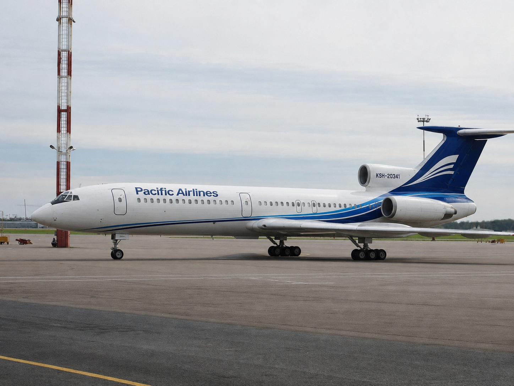
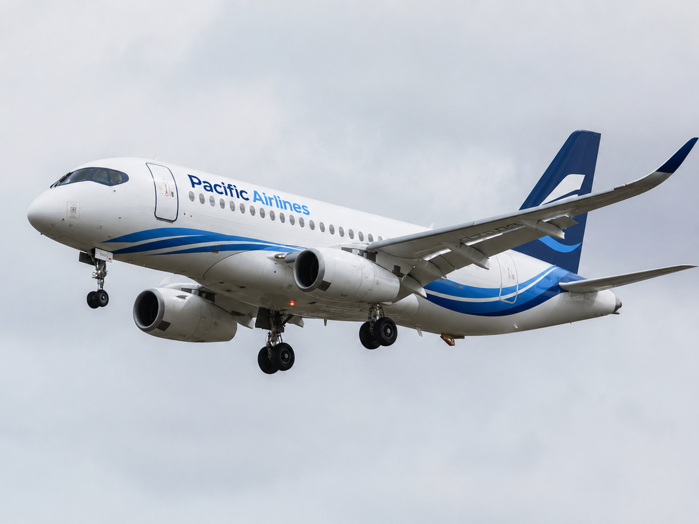

Pacific Airlines
Pacific Airlines — частная авиакомпания Кивиша, основанная в 1992 году в Шентахоре. Считается первым частным авиаперевозчиком страны после окончания коммунистического периода. Наибольшую известность получила благодаря школьно-образовательной программе «Борт №15», в рамках которой выполнялись льготные перевозки детских и учебных групп.
История Pacific Airlines обычно делится на ранний период на самолётах Ту-154МК, формирование специальной образовательной линии, кризис после уничтожения рейса PFA-723 в 2003 году, последующее обновление парка и переход к сочетанию обычных пассажирских перевозок с отдельной учебной программой.
История
Основание и ранний период
Pacific Airlines была основана в 1992 году в Шентахоре. На начальном этапе авиакомпания приобрела у Миатовского авиационного завода три самолёта Ту-154МК и открыла первые международные маршруты на тихоокеанском направлении. В ранний период перевозчик рассматривался прежде всего как символ открытия частного гражданского рынка в Кивише после 1989 года.

Формирование программы «Борт №15»
В 1993 году внутри Pacific Airlines была оформлена специальная программа для перевозки школьных и учебных групп, получившая обозначение «Борт №15». Первоначально она использовалась для полётов в Кивиш на экскурсии, учебные программы и посещение музеев, космических объектов и технократических центров. В дальнейшем программа была расширена и стала использоваться для образовательных рейсов между различными странами.
Отказ от Boeing
В 1994 году Pacific Airlines отказалась от планов закупки самолётов Boeing после катастрофы рейса Kivish Air 624. После этого перевозчик закрепил курс на эксплуатацию самолётов собственного или регионально близкого производственного контура.
Репутация специализированного перевозчика
Во второй половине 1990-х годов Pacific Airlines закрепилась как перевозчик, ориентированный на учебные и детские группы. Репутация компании строилась на усиленном техническом контроле, жёстком отборе экипажей для рейсов «Борт №15» и ограниченной коммерческой наценке на образовательные перевозки. В 2000 году часть самолётов Ту-154 прошла модернизацию под экологические стандарты, а после событий 11 сентября 2001 года были дополнительно ужесточены процедуры безопасности и защиты кабины.
Рейс PFA-723 и его последствия
В 2003 году рейс PFA-723 с южнокорейскими школьниками, возвращавшийся из Кивиша, был уничтожен над территорией КНДР. После катастрофы международная эксплуатация Ту-154 была временно ограничена, программа детских перевозок приостановлена, а часть оставшихся за рубежом групп возвращалась при помощи самолётов государственной авиакомпании Kivish Air.
В 2019 году на бывших секретных базах КНДР были обнаружены самописцы рейса. Их расшифровка завершилась в 2020 году и подтвердила, что самолёт отклонился от маршрута вследствие системной навигационной ошибки, после чего был поражён северокорейскими ракетами. По данным самописцев, разрушение борта произошло на высоте около 9 200 метров.
Техническое обновление и международное расширение
После кризиса 2003 года Pacific Airlines и МиАЗ начали глубокую переработку навигационных систем и кабин Ту-154. В последующие годы в парк вводились самолёты со стеклянной кабиной, GPS-навигацией и новой архитектурой приборов. В 2005 году образовательные перевозки перестали ограничиваться маршрутами в Кивиш и стали использоваться для детских и учебных поездок между другими странами.
В 2008 году для небольших групп в парк были введены Як-42Д, часть которых позднее прошла дополнительную модернизацию кабины и систем безопасности. В 2013 году для замены части этих самолётов были закуплены Sukhoi Superjet 100.
Переход к новому поколению парка
В 2017 году Pacific Airlines вывела из активной эксплуатации почти все Як-42, продала часть Ту-154 и приобрела самолёты AirHokol-66 D134. В 2018 парк был дополнен двумя самолётами AirHokol-66 D140, после чего компания усилила обычные пассажирские перевозки и стала рассматривать более дальние рынки наряду с продолжением программы «Борт №15».
Ограничения 2020-х годов
С 2022 года Pacific Airlines прекратила обычные частные рейсы в Российскую Федерацию, сохранив возможность отдельных школьно-образовательных перевозок. Позднее аналогичная формула была формально распространена и на украинское направление. В 2026 году из-за роста угрозы со стороны беспилотников на фоне расширения войны компания временно ограничила или приостановила часть детских рейсов в Россию, Украину и ряд соседних стран Восточной Европы; более мягкий режим после переговоров был сохранён для отдельных направлений, включая Беларусь, Польшу и Финляндию.

Деятельность
В разные периоды Pacific Airlines совмещала две основные модели работы: обычные пассажирские перевозки и специальную образовательную программу «Борт №15». Со второй половины 2000-х годов образовательные рейсы выполнялись не только в Кивиш, но и между другими странами по льготной схеме для школ, музеев, учебных центров и детских программ обмена.
Флот
- Ту-154МК — Основной тип самолётов. Сейчас 10 шт.
- Як-42Д — Малый тип самолетов купленные в качестве бортов для переживания кризиса авиа-топлива. Сейчас 2 шт в резерве в ангарах ареапорта города Шентахор
- Sukhoi Superjet 100 — Стредний тип самолетов купленный на замену старых бортов изпользуешихся на рейсах "Борт №15". Сейчас 4 шт.
- AirHokol-66 D134 — Основной среднемагистральный тип самолетов для обычных рейсов. Сейчас 4 шт.
- AirHokol-66 D140 — Более крупный самолёт, усиливший парк. Сейчас 2 шт.
См. также
Примечание: страница описывает историю авиакомпании Pacific Airlines и связанной с ней программы «Борт №15».